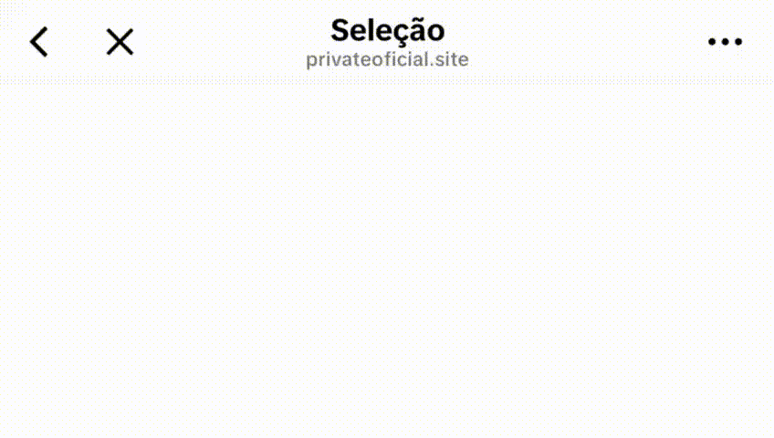

Abra no navegador
Siga os passos abaixo para abrir corretamente no navegador e depois toque em ABRIR TELEGRAM.
- Toque nos três pontos (ou menu do app) no canto do player/browser embutido;
- Escolha “Abrir no navegador” ou “Abrir em Safari/Chrome”;
- Depois volte aqui e toque em ABRIR TELEGRAM.

ABRIR TELEGRAM
Redirecionamento seguro • Nunca armazenamos dados pessoais.